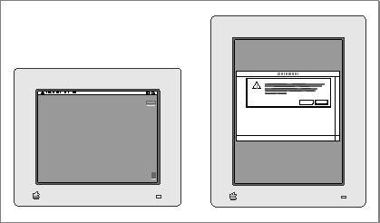
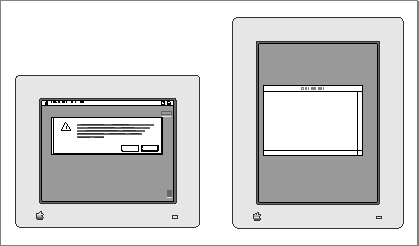
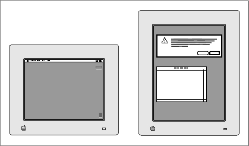
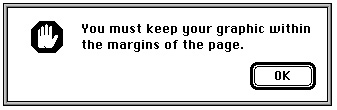
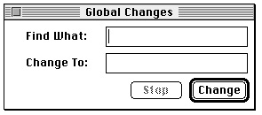
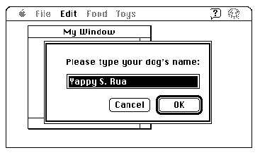

Displaying Alert and Dialog Boxes
You typically define alerts and dialog boxes in resources, as described in "Creating Alert Sounds and Alert Boxes" beginning on page 6-18 and in "Creating Dialog Boxes" beginning on page 6-23. To create an alert or a dialog box, you use a Dialog Manager function--such asAlertorGetNewDialog--that incorporates information from your item list resource and from your alert resource or dialog resource into a data structure, called a dialog record, in memory. The Dialog Manager creates a dialog record, which is a data structure of typeDialogRecord,whenever your application creates an alert or a dialog box.The Dialog Manager automatically displays alert boxes at the appropriate alert stages; it also automatically displays those dialog boxes that you specify as visible in their dialog resources. But you must use a Window Manager routine such as
ShowWindowto display dialog boxes that you specify as invisible in their dialog resources.When you use a function that creates an alert (namely,
Alert,StopAlert,NoteAlert, orCautionAlert), the Dialog Manager automatically displays the alert box at the alert stages that you specify with thevisibleconstant in your alert resource. You do not use any routines other than theAlert,StopAlert,NoteAlert, andCautionAlertfunctions to display an alert box.When you specify the
visibleconstant in a dialog resource, the Dialog Manager immediately displays the dialog box when you use theGetNewDialogfunction. If
you instead specify theinvisibleconstant so that the dialog box is initially invisible when you callGetNewDialog, use the Window Manager procedureShowWindow
to display it. This is useful if you need to manipulate a dialog item dynamically usingGetDialogItemandSetDialogItembefore you display the dialog box. For example, if you want to install an application-defined draw procedure for a dialog box, you specify theinvisibleconstant in a dialog resource, pass the resource ID of that dialog resource in a parameter toGetNewDialog, useGetDialogItemandSetDialogItemto install the application-defined draw procedure, then callShowWindowto display the dialog box, as previously shown in Listing 6-16 on page 6-58.You should always specify
Pointer(-1)as a parameter toGetNewDialogto display a dialog box as the active (that is, frontmost) window.You should perform the following tasks in conjunction with displaying an alert box or a dialog box:
- Specify an appropriate screen position at which to display the alert box or dialog box.
- Deactivate the frontmost window (if one exists) before displaying an alert box or a modal dialog box.
- Determine whether you've already created a modeless dialog box and, if so, select it instead of creating a new instance of it.
- Adjust your menus appropriately for a modal dialog box with editable text items and for any movable modal and modeless dialog box you wish to display.
TheDialogSelectfunction uses the QuickDraw procedureSetPortto make the alert or dialog box the current graphics port. TheModalDialogprocedure and the functions that create alert boxes useDialogSelectto respond to update and activate events. You can also useDialogSelectto respond to update and activate events in your modeless and movable modal dialog boxes. In response to update events, you can instead use theUpdateDialogfunction, which also makes the dialog box the current graphics port.
In these cases, it's generally not necessary for your application to callSetPortwhen displaying, updating, or activating alert boxes and dialog boxes. See Inside Macintosh: Imaging for more information aboutSetPort.These and other related issues are explained in detail in the next several sections of
this chapter.Positioning Alert and Dialog Boxes
As previously described in "Creating Alert Sounds and Alert Boxes" beginning on page 6-18 and "Creating Dialog Boxes" beginning on page 6-23, you specify a rectangle in every alert resource and dialog resource. The dimensions of this rectangle determine the dimensions of the alert box or dialog box. You can also let the rectangle coordinates serve as the global coordinates that determine the position of the alert box or dialog box, or you can let the Dialog Manager automatically locate it for you according to three standard positions. To specify these standard positions in System 7, your application can use the following constants in the Rez input files for alert resources and dialog resources:
Constant Description alertPositionParentWindow Position the alert or dialog box over the frontmost window alertPositionMainScreen Position the alert or dialog box on
the main screenalertPositionParentWindowScreen Position the alert or dialog box on
the screen containing the frontmost windowIf your application positions alert or dialog boxes on its own, don't use these
constants, because your code may conflict with the Dialog Manager. If you do use
these constants, use them to specify the positions of both alert boxes and dialog boxes.The next three figures illustrate various alert boxes that might appear when the user is working on two monitors: a 12-inch monitor (the main screen) that displays the menu bar and a full-page monitor that displays a document window. These figures show where the Dialog Manager places an alert box according to the position specified in
the alert resource.Figure 6-33 shows an alert box displayed in response to an error made by the
user while working on a document; the alert resource specifies thealertPositionParentWindowconstant, which tells the Dialog Manager to
position the alert box over the frontmost window so that the window's title bar
appears. This position is appropriate for an alert box or a dialog box that relates
directly to the frontmost window. You should always try to position alert boxes
and dialog boxes where the user is working.Figure 6-33 An alert box in front of a document window

Not all alert boxes or dialog boxes relate to the frontmost window. Some may relate
only to actions the user performs on the main screen. For example, Figure 6-34
illustrates an alert box displayed when the user chooses the About command from
the Apple menu. For an alert box or dialog box such as this, you should specify thealertPositionMainScreenconstant in the alert or dialog resource. Figure 6-34 shows how the Dialog Manager centers such an alert box near the top of the main screen.Figure 6-34 An alert box on the main screen

Sometimes you may need to display an alert box or a dialog box that applies neither to the frontmost window nor to an action performed on the main screen. To catch the user's attention, you should position such an alert or dialog box on the screen where the user is working. For example, if you need to alert the user that available disk space is low, you should specify the
alertPositionParentWindowScreenconstant. Figure 6-35 shows how the Dialog Manager displays such an alert box or dialog box when a document window appears on a screen other than the main screen.Figure 6-35 An alert box in the alert position of the document window screen

If you don't specify a positioning constant, the Dialog Manager uses the rectangle coordinates in your alert resource or dialog resource as global coordinates specifying where to position your alert or dialog box. If you wish to specify the position yourself in this manner, you should generally try to center alert and dialog boxes between the left and right margins of the screen or the window where the user is working, whichever is most appropriate. If you don't use the positioning constants, you should also place the tops of alert and dialog boxes (including the title bars of modeless and movable modal dialog boxes) below the menu bar. You can use the
GetMBarHeightfunction, described in the chapter "Menu Manager" in this book, to determine the height of the menu bar.Deactivating Windows Behind Alert and Modal Dialog Boxes
For alert and modal dialog boxes, theModalDialogprocedure traps all events before they are passed to your event loop, which normally handles activate events for your windows. Thus, if a window is active, you must explicitly deactivate it before displaying an alert box or a modal dialog box.Your modeless dialog boxes and movable modal dialog boxes never use the
ModalDialogprocedure. Therefore, you do not have to deactivate the frontmost window explicitly before displaying a modeless or a movable modal dialog box.
Instead, the Event Manager continues sending your application activate events for
your windows as needed, which you typically handle in your normal event loop. (The chapters "Event Manager" and "Window Manager" in this book explain how to
activate and deactivate windows.)Plate 2 at the front of this book shows an alert box that an application displays when the user chooses the About command in the Apple menu. Listing 6-18 shows an application- defined routine,
ShowMyAboutBox, that displays this alert box.Listing 6-18 Deactivating the front window before displaying an alert box
PROCEDURE ShowMyAboutBox; VAR itemHit: Integer; docWindow: WindowPtr; event: EventRecord; BEGIN docWindow := FrontWindow; {get the front window} {if there's a front window, deactivate it} IF docWindow <> NIL THEN DoActivate(docWindow, FALSE, event); {then show the alert box} itemHit := Alert(kAboutBoxID, @MyEventFilter); END;TheShowMyAboutBoxroutine uses the Window Manager functionFrontWindow. IfFrontWindowreturns a valid pointer,ShowMyAboutBoxcalls itsDoActivateprocedure to deactivate that window before calling theAlertfunction to display the alert box. When the user clicks the OK button, the alert box is dismissed. The Event Manager then sends the application update events so that it can update the contents of any windows as appropriate, and the Event Manager sends the application an activate event so that it can activate the previously frontmost window again. The application handles these events in its normal event loop.If your application does not display an alert box during certain alert stages, use the
GetAlertStagefunction to test for those stages before deactivating the active window. TheGetAlertStagefunction returns the last occurrence of an alert as a number from
0 to 3. Figure 6-36 shows an alert box that appears only after the user repeats an error three consecutive times.Figure 6-36 An alert box displayed only after the third alert stage

Listing 6-19 shows how you might use
GetAlertStageto determine if such an alert needs to be displayed before deactivating the document window.Listing 6-19 Using
GetAlertStageto determine when to deactivate the front windowPROCEDURE MyAlert; VAR itemHit: Integer; alertStage: Integer; docWindow: WindowPtr; event: EventRecord; BEGIN docWindow := FrontWindow; alertStage := GetAlertStage; IF (alertStage >= 2) AND (docWindow <> NIL) THEN {at 3rd alert stage, } DoActivate(docWindow, FALSE, event); { deactivate front window & } itemHit := StopAlert(kStopAlertID, @MyEventFilter); { display alert box} END;Displaying Modeless Dialog Boxes
For a modeless dialog box, check to make sure it isn't already open before you create and display it. For example, the modeless dialog box shown in Figure 6-37 should appear when the user chooses the Global Changes command. After invoking this command, the user may select another window, thereby deactivating the modeless dialog box.Figure 6-37 A modeless dialog box for changing text in a document

So as not to create multiple versions of this dialog box whenever the user chooses the Global Changes command, the application-defined routine
DoGlobalChangesDialog, shown in Listing 6-20, checks whether the dialog box already exists.Listing 6-20 Ensuring that the modeless dialog box isn't already open before creating it
FUNCTION DoGlobalChangesDialog: OSErr; BEGIN DoGlobalChangesDialog := kSuccess; {assume success} IF gChangeDialogPtr = NIL THEN {it doesn't exist, so create it} BEGIN gChangeDialogPtr := GetNewDialog(kGlobalChangesDlog, NIL, Pointer(-1)); IF gChangeDialogPtr = NIL THEN {handle failure} BEGIN DoGlobalChangesDialog := kFailed; EXIT(DoShowModelessFindDialogBox); END; {set window refCon to store value that identifies the dbox} SetWRefCon(gChangeDialogPtr, LongInt(kGlobalChangesDlog)); END ELSE {it does exist, so display and select it} BEGIN ShowWindow(gChangeDialogPtr); {it's hidden; so show it} SelectWindow(gChangeDialogPtr);{bring it to the front} END; MyAdjustMenus; {adjust the menus} END;In this example, a pointer to the modeless dialog box is stored in a global variable. If
the global variable does not contain a pointer,DoGlobalChangesDialogusesGetNewDialogto create and draw the dialog box. Later, if the user decides to close the modeless dialog box, the application merely hides it so that when the user needs it again,DoGlobalChangesDialogcan display the dialog box in the same location and with the same text selected as when the user last used it. Hiding this dialog box is illustrated later in Listing 6-30 on page 6-87.If the dialog box has already been created,
DoGlobalChangesDialoguses the Window Manager proceduresShowWindowto make the dialog box visible andSelectWindowto make it active.Finally,
DoGlobalChangesDialoguses the application-defined routineMyAdjustMenusto adjust the menus as appropriate for the modeless dialog box.Listing 6-34 on page 6-91 illustrates an application-defined routine,
DoActivateGlobalChangesDialog, that handles activate events for this
modeless dialog box. TheDoActivateGlobalChangesDialogroutine in
turn usesDialogSelect, which sets the graphics port to the modeless dialog
box whenever the user makes it active.Adjusting Menus for Modal Dialog Boxes
The Dialog Manager and the Menu Manager interact to provide various degrees of access to the menus in your menu bar. For alert boxes and modal dialog boxes without editable text items, you can simply allow system software to provide the appropriate access to your menu bar.When your application displays either an alert box or a modal dialog box (that is, a window of type
dBoxProc), these actions occur:When your application displays an alert box or calls the
- System software disables all menu items in the Help menu, except the Show Balloons (or Hide Balloons) command, which system software enables.
- System software disables all menu items in the Application menu.
- If the Keyboard menu appears in the menu bar, system software enables that menu but disables the About Keyboards command.
ModalDialogprocedure
for a modal dialog box (described in "Responding to Events in Modal Dialog Boxes" beginning on page 6-75), the Dialog Manager determines whether any of the following cases is true:If none of these cases is true, system software behaves as follows:
- Your application does not have an Apple menu.
- Your application has an Apple menu, but the menu is disabled when the dialog box
is displayed.- Your application has an Apple menu, but the first item in that menu is disabled when the dialog box is displayed.
When your application displays alert boxes and modal dialog boxes with no editable text items, it can safely allow system software to handle menu bar access as described in steps 1 and 2.
- The Menu Manager disables all of your application's menus.
- If the modal dialog box contains a visible and active editable text field--and if the menu bar contains a menu having commands with the standard keyboard equivalents Command-X, Command-C, and Command-V--then the Menu Manager enables
those three commands and the menu that contains them. The user can then use either the menu commands or their keyboard equivalents to cut, copy, and paste text.
(The menu item having keyboard equivalent Command-X must be one of the first
five menu items.)However, because system software cannot handle the Undo or Clear command (or any other context-appropriate command) for you, your application should handle its own menu bar access for modal dialog boxes with editable text items by performing the following tasks:
You don't need to do anything else for the system-handled menus--namely, Application, Keyboard, and Help. System software handles these menus for you automatically.
- disable the Apple menu or the first item in the Apple menu (typically, your application's About command) in order to take control of its menu bar access
when displaying a modal dialog box- disable all of its menus except the Edit menu, as well as any inappropriate commands in the Edit menu
- use the Dialog Manager procedures
DialogCut,DialogCopy,DialogPaste,
andDialogDeleteto support the Cut, Copy, Paste, and Clear commands in editable text items- provide your own code for supporting the Undo command
- enable your application's items in the Help menu as appropriate (system software disables all items except the Hide Balloons/Show Balloons command)
The
DialogCut,DialogCopy,DialogPaste, andDialogDeleteprocedures are described beginning on page 6-132. Your application can test whether a dialog box is the front window when handling mouse-down events in the Edit menu and then call these routines as appropriate.Figure 6-38 illustrates how an application disables all of its own menus except its Edit menu when displaying a modal dialog box containing editable text items. Access to the Edit menu benefits the user who instead of typing prefers copying from and pasting into editable text items.
Figure 6-38 Menu access when displaying a modal dialog box

Listing 6-21 on the next page shows an application-defined routine,
MyAdjustMenus, that the SurfWriter application calls to adjust its menus after it displays a window or dialog box, but before it callsModalDialogto handle events in a modal dialog box. WhenMyAdjustMenusdetermines that the frontmost window is a modal dialog box containing an editable text item, it calls another application-defined routine,MyAdjustMenusForDialogs, which adjusts the menus appropriately. Listing 6-22 on the next page shows theMyAdjustMenusForDialogsroutine.Listing 6-21 Adjusting menus for various windows
PROCEDURE MyAdjustMenus; VAR window: WindowPtr; windowType: Integer; menu: MenuHandle; BEGIN window := FrontWindow; windowType := MyGetWindowType(window); CASE windowType OF kMyDocWindow: {document window is in front} MyAdjustMenusForDocWindows; kMyDialogWindow: {a dialog box is in front} MyAdjustMenusForDialogs; kDAWindow: {adjust menus accordingly for a DA window} MyAdjustMenusForDA; kNil: {there isn't a front window} MyAdjustMenusNoWindows; END; {of CASE} DrawMenuBar; {redraw menu bar} END;TheMyAdjustMenusForDialogsroutine in Listing 6-22 first determines what type of dialog box is in front: modal, movable modal, or modeless. For modal dialog boxes,MyAdjustMenusForDialogsdisables the Apple menu so that the application can take control of its menus away from the Dialog Manager. TheMyAdjustMenusForDialogsroutine then uses the Menu Manager routinesGetMenuHandleandDisableItemto disable all other application menus except the Edit menu. (To provide help balloons that explain why these menus are unavailable to the user,MyAdjustMenusForDialogsuses the Help Manager procedureHMSetMenuResIDto reassign help resources to these menus; see the chapter "Help Manager" in Inside Macintosh: More Macintosh Toolbox for more information.)Listing 6-22 Disabling menus for a modal dialog box with editable text items
PROCEDURE MyAdjustMenusForDialogs; VAR window: WindowPtr; windowType: Integer; myErr: OSErr; menu: MenuHandle; BEGIN window := FrontWindow; windowType := MyGetWindowType(window); CASE windowType OF kMyModalDialogs: BEGIN menu := GetMenuHandle(mApple); {get handle to Apple menu} IF menu = NIL THEN EXIT(MyAdjustMenusForDialogs); DisableItem(menu, 0); {disable Apple menu to get control of menus} myErr := HMSetMenuResID(mFile, kFileHelpID); {set up help balloons} menu := GetMenuHandle(mFile); {get handle to File menu} IF menu = NIL THEN EXIT(MyAdjustMenusForDialogs); DisableItem(menu, 0); {disable File menu} myErr := HMSetMenuResID(mFile, kFileHelpID); {set up help balloons} IF myErr <> NoErr THEN EXIT(MyAdjustMenusForDialogs); menu := GetMenuHandle(mTools); {get handle to Tools menu} IF menu = NIL THEN EXIT(MyAdjustMenusForDialogs); DisableItem(menu, 0); {disable Tools menu} myErr := HMSetMenuResID(mTools, kToolsHelpID); {help balloons} IF myErr <> NoErr THEN EXIT(MyAdjustMenusForDialogs); MyAdjustEditMenuForModalDialogs; END; {of kMyModalDialogs CASE} kMyGlobalChangesModelessDialog: ; {adjust menus here as needed} kMyMovableModalDialog: ; {adjust menus here as follows: } { disable all menus except Apple, then } { call MyAdjustEditMenuForModalDialogs for editable text items} END; {of CASE} END;To adjust the items in the Edit menu, MyAdjustMenusForDialogs calls another application-defined routine,MyAdjustEditMenuForModalDialogs, which is
shown in Listing 6-23 on the next page. TheMyAdjustEditMenuForModalDialogsroutine uses application-defined code to implement the Undo command; uses the
Menu Manager procedureEnableItemto enable the Cut, Copy, Paste, and Clear commands when appropriate; and disables the commands that support Edition
Manager capabilities. Remember that your application should use the Dialog Manager proceduresDialogCut,DialogCopy,DialogPaste, andDialogDeleteto support the Cut, Copy, Paste, and Clear commands in editable text items.Listing 6-23 Adjusting the Edit menu for a modal dialog box
PROCEDURE MyAdjustEditMenuForModalDialogs; VAR window: WindowPtr; menu: MenuHandle; selection, undo: Boolean; offset: LongInt; undoText: Str255; BEGIN window := FrontWindow; menu := GetMenuHandle(mEdit); {get a handle to the Edit menu} IF menu = NIL THEN {add your own error handling} EXIT (MyAdjustEditMenuForModalDialogs); undo := MyIsLastActionUndoable(undoText); IF undo THEN {if action can be undone} BEGIN EnableItem(menu, iUndo); SetMenuItemText(menu, iUndo, undoText); END ELSE {if action can't be undone} BEGIN SetMenuItemText(menu, iUndo, gCantUndo); DisableItem(menu, iUndo); END; selection := MySelection(window); IF selection THEN BEGIN {enable editing items if there's a selection} EnableItem(menu, iCut); EnableItem(menu, iCopy); END ELSE BEGIN {disable editing items if there isn't a selection} DisableItem(menu, iCut); DisableItem(menu, iCopy); END; IF MyGetScrap(NIL, 'TEXT', offset) > 0 THEN EnableItem(menu, iPaste) {enable if something to paste} ELSE DisableItem(menu, iPaste);{disable if nothing to paste} DisableItem(menu, iSelectAll); DisableItem(menu, iCreatePublisher); DisableItem(menu, iSubscribeTo); DisableItem(menu, iPubSubOptions); END; END;See the chapter "Menu Manager" in this book for more information on menus and the menu bar.When the user dismisses the alert box or modal dialog box, the Menu Manager restores all menus to their state prior to the appearance of the alert or modal dialog box--unless your application handles its own menu bar access, in which case you must restore the menus to their previous states. You can use a routine similar to
MyAdjustMenus, shown in Listing 6-21 on page 6-63, to adjust the menus appropriately according to the type of window that becomes the frontmost window.Adjusting Menus for Movable Modal and Modeless Dialog Boxes
Although it always leaves the Help, Keyboard, and Application menus and their commands enabled, system software does nothing else to manage the menu bar when you display movable modal and modeless dialog boxes. Instead, your application should allow or deny access to the rest of your menus as appropriate to the context. For example, if your application displays a modeless dialog box for a search-and-replace command, you should allow access to the Edit menu to assist the user with the editable text items, and you should allow use of the File menu so that the user can open another file to be searched. However, you should disable other menus if their commands cannot be used inside the active modeless dialog box.When creating a modeless dialog box, your application should perform the following tasks:
When your application creates a movable modal dialog box, it should perform the following tasks:
- disable only those menus whose commands are invalid in the current context
- if the modeless dialog box includes editable text items, use the Dialog Manager procedures
DialogCut,DialogCopy,DialogPaste, andDialogDeleteto support the Cut, Copy, Paste, and Clear commands in editable text itemsListing 6-21 on page 6-63 shows an application-defined routine,
- leave the Apple menu enabled so that the user can open other applications with it
- if your movable modal dialog box contains editable text items, leave the Edit menu enabled but use the Dialog Manager procedures
DialogCut,DialogCopy,DialogPaste, andDialogDeleteto support the Cut, Copy, Paste, and
Clear commands- disable all of your other menus
MyAdjustMenus, that SurfWriter uses to adjust its menus after it displays a window or dialog box. You can use a similar routine to adjust your menus as appropriate given the nature of the active window, movable modal dialog box, or modeless dialog box.Displaying Multiple Alert and Dialog Boxes
You should generally present the user with only one modal dialog box or alert box at a time. Sometimes, you may need to present a modal dialog box and an alert box on the screen at one time. For example, when the user saves a file with the same name as another file, the Standard File Package displays an alert box on top of the standard file dialog box. The alert box asks the user whether to replace the existing file.Avoid closing a modal dialog box and immediately displaying another modal dialog
box or an alert box in response to a user action. This situation creates a "tunneling modal dialog box" effect that might confuse the user. Missing the content of the previous
modal dialog box and unable to return to it, the user has difficulty predicting what will happen next.However, the user should never see more than one modal dialog and one alert box on the screen simultaneously. You can present multiple simultaneous modeless dialog boxes, just as you can present multiple document windows.
When you remove an alert box or a modal dialog box that overlies the default button
of a previous alert box, the Dialog Manager doesn't redraw that button's bold outline. Therefore, you should not use an alert box if you need to display another overlapping alert box or dialog box. Instead, you should create a modal dialog box, and you must provide it with an application-defined item that draws the bold outline around the default button. TheModalDialogprocedure then causes the item to be redrawn after an update event.In System 7, the Window Manager automatically dims the window frame of a dialog box when you deactivate it to display an alert box, another modal dialog box, or a window. When you deactivate a dialog box, you should use the Control Manager procedure
HiliteControlto make the controls of a dialog box inactive. You should also draw the outline of the default button of a deactivated dialog box in gray instead of black. Listing 6-16 on page 6-58 shows an application-defined procedure that draws a gray outline when the default button is inactive; Listing 6-34 on page 6-91 shows how to useHiliteControlto make buttons inactive and active in response to activate events for a dialog box.Displaying Alert and Dialog Boxes From the Background
If you ever need to display an alert box or a modal dialog box while your application is running in the background or is otherwise invisible to the user, you should use the Notification Manager to post a notification to the user. For example, if your application performs lengthy background tasks such as printing many documents or transferring large amounts of data to other computers, you might wish to inform the user that the operation is completed. In these cases, you should post a notification request to notify the user when the operation is completed. Then the Notification Manager automatically displays an alert box containing whatever message you specify; you do not need to use the Dialog Manager to create the alert box yourself.Note that the Notification Manager provides a one-way communications path from your application to the user. There is no provision for carrying information back from the user to your application while it is in the background (although it is possible for your application to determine if the notification was received). If you need to solicit information from the user, use the Notification Manager to ask the user to bring your application to the foreground. The user can then respond to your alert box or modal dialog box. See the chapter "Notification Manager" in Inside Macintosh: Processes for information about the Notification Manager.
Including Color in Your Alert and Dialog Boxes
On color monitors, the Dialog Manager automatically adds color to your alert and dialog boxes so that they match the colors of the windows, alert boxes, and dialog boxes used by system software. These colors provide aesthetic consistency across all monitors, from black-and-white displays to 8-bit color displays. On a color monitor, for example, the racing stripes in the title bar of a modeless dialog box are gray, the close box and window frame are in color, and the buttons and text are black.When you create alert and dialog resources, your application's alert and dialog boxes use the system's default colors. With the following exceptions, creating alert and dialog resources is typically all you need to do to provide color for your alert and dialog boxes:
"Using an Application-Defined Item to Draw the Bold Outline for a Default Button" beginning on page 6-56 explains how to create a draw routine that outlines the default button of a dialog box. If you deactivate a dialog box, you should dim its buttons and use gray to draw the outline for the default button. Because
- When you need to include a color version of an icon in an alert box or a dialog box, you must create a resource of type
'cicn'with the same resource ID as the black-and-white'ICON'resource specified in the item list resource. Plate 2 at the front of this book shows an alert box that includes a color icon.- If you use
GetNewDialogorNewDialogto create a dialog box and you need to produce a blended gray color for outlining the inactive (that is, dimmed) default button, you must create a dialog color table ('dctb') resource with the same resource ID as the dialog resource.GetNewDialogandNewDialogsupply black-and-white graphics ports for dialog boxes, you can create a dialog color table resource for the dialog box to force the Dialog Manager to supply a color graphics port. Then you can use a blended gray color for the outline for the default button. (NewColorDialogsupplies a color graphics port.)Even when you create a dialog color table resource for drawing a gray outline, you should not change the system's default colors. Listing 6-24 shows a dialog color table resource that leaves the default colors intact but forces the Dialog Manager to supply a color graphics port.
Listing 6-24 Rez input for a dialog color table resource using the system's default colors
data 'dctb' (kGlobalChangesDialog, purgeable) { $"0000 0000 0000 FFFF" /*use default colors*/ };By using the system's default colors, you ensure that your application's interface is consistent with that of the Finder and other applications. However, if you feel absolutely compelled to break from this consistency, the Dialog Manager offers you the ability to specify colors other than the default colors. Be aware, however, that nonstandard colors in your alert and dialog boxes may initially confuse your users.Also be aware that despite any changes you make, users can alter the colors of alert and dialog boxes anyway by changing the settings in the Color control panel.
Your application can specify its own colors in an alert color table (
'actb') resource with the same resource ID as the alert resource or in a dialog color table ('dctb') resource with the same resource ID as the dialog resource. Both of these resources have exactly the same format as a window color table ('wctb') resource, described in the chapter "Window Manager" in this book.You don't have to call any new routines to change the colors used in alert or dialog boxes. When you call the
- WARNING
- Because the behavior of color alert and dialog boxes, color items, and color icons is unreliable on computers using system software versions earlier than System 7, do not specify colors for these elements if you wish to maintain backward compatibility.
GetNewDialogfunction, for example, the Dialog Manager automatically attempts to load a dialog color table resource with the same resource ID
as the dialog resource.Likewise, you can change the system default colors for controls and the color, style, typeface, and size of text used in an alert box or a dialog box by creating an item color table (
'ictb') resource with the same resource ID as the item list resource. You don't have to call any routines to create color items. When you use theGetNewDialogfunction, the Dialog Manager looks first for an item color table resource with the same resource ID as that of the item list resource.Even if you provide your own
- Note
- If you want to provide an item color table resource for an alert box or
a dialog box, you must create an alert color table resource or a dialog
color table resource, even if the item color table resource has no actual color information and describes only static text and editable text style changes. You cannot use an item color table resource to set the font on computers that do not support Color QuickDraw. Also, be aware that changing the default system font makes your application more difficult to localize.'dctb','actb', or'ictb'resources, you do not
need to test whether your application is running on a computer that supports Color QuickDraw in order to use these resources.